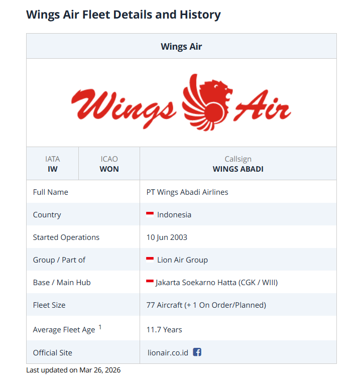

Nilai-nilai Kami
Kami Membuat Orang Terbang
Wings Air merupakan anak perusahaan dari PT. Langit Esa Oktagon (PT. LEO Group) yang merupakan bagian dari Lion Group yang lebih luas. Sebagai maskapai penerbangan domestik terkemuka dan maskapai berbiaya rendah yang disiplin, kami menawarkan penerbangan kepada pelanggan yang sadar nilai yang fokus pada harga, frekuensi penerbangan, dan jaringan rute yang luas di seluruh Indonesia.
Our Story
Sejak penerbangan pertama kami pada tahun 2000, Lion Air telah berkembang pesat menjadi maskapai penerbangan domestik pilihan Indonesia. Pada tahun 2018, kami mengangkut 36,8 juta penumpang – hampir 35% dari seluruh pelancong udara di negara ini – ke pulau, kota, dan komunitas dari Nusantara. Bisnis kami juga terstruktur secara unik untuk pertumbuhan sebagai satu-satunya pengangkut lokal kargo udara antara tujuan Indonesia. Keberhasilan kami untuk menjadi maskapai berbiaya rendah terkemuka di negara ini telah dibangun dengan memberikan nilai tarif yang luar biasa kepada pelanggan, memastikan jadwal penerbangan yang nyaman dan menciptakan jaringan rute yang penting bagi kepentingan 260 juta orang di Negara terpadat di Asia Tenggara. IATA memperkirakan bahwa pada tahun 2037, Indonesia akan menjadi pasar penerbangan terbesar keempat di dunia dan Lion Air bangga memainkan peran utama dalam pembangunan negara. Sejak 2018, kami secara strategis memperluas layanan penumpang kami ke pasar internasional tertentu termasuk Singapura, Malaysia, Arab Saudi, dan China. Namun, fokus kami tetap pada operasi hemat biaya dan komitmen mutlak untuk memberikan pilihan biaya terendah kepada penumpang dan pelanggan kargo yang sadar nilai ke semua tujuan kami.